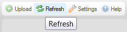

Kdy鱉 pracujete ve sd穩len矇m prost?ed穩, kter矇 spravuje CKFinder, kde des穩tky ?i dokonce stovky u鱉ivatel轡 pracuje na stejn羸ch souborech ve stejnou dobu, m轡鱉e se st獺t, 鱉e ostatn穩 p?idaj穩 zm?ny soubor轡 ?i slo鱉ek, s kter羸mi pracujete, nebo si je pr獺v? prohl穩鱉穩te.
Tady se m轡鱉e hodit mo鱉nost Znovu na?穩st (Refresh). Tato funkce V獺m umo鱉?uje znovu na?穩st obsahy slo鱉ky a vid?t jej穩 nejnov?j禳穩 stav. Kdykoliv pot?ebujete vid?t aktualizovan羸 seznam soubor轡, klikn?te na tla?穩tko Znovu na?穩st (Refresh) v Panelu n獺stroj轡 CKFinder.

Tato funkce je zvl獺禳t? u鱉ite?n獺, pokud CKFinder pou鱉穩v獺te jako software pro spolupr獺ci, sd穩len穩 soubor轡 a slo鱉ek s p?獺teli, rodinou, kolegy, nebo jakoukoli jinou skupinou u鱉ivatel轡. Abyste zajistili, 鱉e v鱉dycky uvid穩te tu nejaktu獺ln?j禳穩 verzi obsahu v CKFinder, budete cht穩t ob?as znovu na?穩st seznam soubor轡 pro jeho aktualizaci.